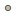
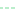

<!doctype html>
<html lang="en">
    <head>
        <meta charset="utf-8">
        <meta http-equiv="X-UA-Compatible" content="IE=edge">
        <meta name="viewport" content="initial-scale=1,user-scalable=no,maximum-scale=1,width=device-width">
        <meta name="mobile-web-app-capable" content="yes">
        <meta name="apple-mobile-web-app-capable" content="yes">
        <link rel="stylesheet" href="css/leaflet.css">
        <link rel="stylesheet" href="css/L.Control.Layers.Tree.css">
        <link rel="stylesheet" href="css/L.Control.Locate.min.css">
        <link rel="stylesheet" href="css/qgis2web.css">
        <link rel="stylesheet" href="css/fontawesome-all.min.css">
        <link rel="stylesheet" href="css/filter.css">
<link rel="stylesheet" href="css/nouislider.min.css">
        <link rel="stylesheet" href="css/leaflet-control-geocoder.Geocoder.css">
        <link rel="stylesheet" href="css/leaflet-measure.css">
        <style>
        html, body, #map {
            width: 100%;
            height: 100%;
            padding: 0;
            margin: 0;
        }
        </style>
        <title></title>
    </head>
    <body>
        <div id="map">
        </div>
        <script src="js/qgis2web_expressions.js"></script>
        <script src="js/leaflet.js"></script>
        <script src="js/L.Control.Layers.Tree.min.js"></script>
        <script src="js/L.Control.Locate.min.js"></script>
        <script src="js/leaflet.rotatedMarker.js"></script>
        <script src="js/leaflet.pattern.js"></script>
        <script src="js/leaflet-hash.js"></script>
        <script src="js/Autolinker.min.js"></script>
        <script src="js/rbush.min.js"></script>
        <script src="js/labelgun.min.js"></script>
        <script src="js/labels.js"></script>
        <script src="js/leaflet-control-geocoder.Geocoder.js"></script>
        <script src="js/leaflet-measure.js"></script>
        <script src="js/tailDT.js"></script>
<script src="js/nouislider.min.js"></script>
<script src="js/wNumb.js"></script>
        <script src="data/HalfmoonCatchmentBoundaries_1.js"></script>
        <script src="data/HalfmoonStreams_2.js"></script>
        <script src="data/UnverifiedPoints_3.js"></script>
        <script src="data/VerifiedPoints_4.js"></script>
        <script>
        var map = L.map('map', {
            zoomControl:true, maxZoom:28, minZoom:1
        }).fitBounds([[40.68939601553512,-78.11514416277839],[40.83865396227399,-77.9038624863944]]);
        var hash = new L.Hash(map);
        map.attributionControl.setPrefix('<a href="https://github.com/tomchadwin/qgis2web" target="_blank">qgis2web</a> &middot; <a href="https://leafletjs.com" title="A JS library for interactive maps">Leaflet</a> &middot; <a href="https://qgis.org">QGIS</a>');
        var autolinker = new Autolinker({truncate: {length: 30, location: 'smart'}});
        function removeEmptyRowsFromPopupContent(content, feature) {
         var tempDiv = document.createElement('div');
         tempDiv.innerHTML = content;
         var rows = tempDiv.querySelectorAll('tr');
         for (var i = 0; i < rows.length; i++) {
             var td = rows[i].querySelector('td.visible-with-data');
             var key = td ? td.id : '';
             if (td && td.classList.contains('visible-with-data') && feature.properties[key] == null) {
                 rows[i].parentNode.removeChild(rows[i]);
             }
         }
         return tempDiv.innerHTML;
        }
        document.querySelector(".leaflet-popup-pane").addEventListener("load", function(event) {
          var tagName = event.target.tagName,
            popup = map._popup;
          // Also check if flag is already set.
          if (tagName === "IMG" && popup && !popup._updated) {
            popup._updated = true; // Set flag to prevent looping.
            popup.update();
          }
        }, true);
        L.control.locate({locateOptions: {maxZoom: 19}}).addTo(map);
        var measureControl = new L.Control.Measure({
            position: 'topleft',
            primaryLengthUnit: 'meters',
            secondaryLengthUnit: 'kilometers',
            primaryAreaUnit: 'sqmeters',
            secondaryAreaUnit: 'hectares'
        });
        measureControl.addTo(map);
        document.getElementsByClassName('leaflet-control-measure-toggle')[0]
        .innerHTML = '';
        document.getElementsByClassName('leaflet-control-measure-toggle')[0]
        .className += ' fas fa-ruler';
        var bounds_group = new L.featureGroup([]);
        function setBounds() {
            map.setMaxBounds(map.getBounds());
        }
        map.createPane('pane_GoogleSatellite_0');
        map.getPane('pane_GoogleSatellite_0').style.zIndex = 400;
        var layer_GoogleSatellite_0 = L.tileLayer('https://mt1.google.com/vt/lyrs=s&x={x}&y={y}&z={z}', {
            pane: 'pane_GoogleSatellite_0',
            opacity: 1.0,
            attribution: '',
            minZoom: 1,
            maxZoom: 28,
            minNativeZoom: 0,
            maxNativeZoom: 18
        });
        layer_GoogleSatellite_0;
        map.addLayer(layer_GoogleSatellite_0);
        function pop_HalfmoonCatchmentBoundaries_1(feature, layer) {
            var popupContent = '<table>\
                    <tr>\
                        <td colspan="2"><strong>Name</strong><br />' + (feature.properties['Name'] !== null ? autolinker.link(feature.properties['Name'].toLocaleString()) : '') + '</td>\
                    </tr>\
                    <tr>\
                        <th scope="row">Test_Link</th>\
                        <td class="visible-with-data" id="Test_Link">' + (feature.properties['Test_Link'] !== null ? autolinker.link(feature.properties['Test_Link'].toLocaleString()) : '') + '</td>\
                    </tr>\
                </table>';
            layer.bindPopup(popupContent, {maxHeight: 400});
            var popup = layer.getPopup();
            var content = popup.getContent();
            var updatedContent = removeEmptyRowsFromPopupContent(content, feature);
            popup.setContent(updatedContent);
        }

        function style_HalfmoonCatchmentBoundaries_1_0() {
            return {
                pane: 'pane_HalfmoonCatchmentBoundaries_1',
                opacity: 1,
                color: 'rgba(250,249,246,1.0)',
                dashArray: '',
                lineCap: 'butt',
                lineJoin: 'miter',
                weight: 2.0, 
                fill: true,
                fillOpacity: 1,
                fillColor: 'rgba(190,207,80,0.0)',
                interactive: true,
            }
        }
        map.createPane('pane_HalfmoonCatchmentBoundaries_1');
        map.getPane('pane_HalfmoonCatchmentBoundaries_1').style.zIndex = 401;
        map.getPane('pane_HalfmoonCatchmentBoundaries_1').style['mix-blend-mode'] = 'normal';
        var layer_HalfmoonCatchmentBoundaries_1 = new L.geoJson(json_HalfmoonCatchmentBoundaries_1, {
            attribution: '',
            interactive: true,
            dataVar: 'json_HalfmoonCatchmentBoundaries_1',
            layerName: 'layer_HalfmoonCatchmentBoundaries_1',
            pane: 'pane_HalfmoonCatchmentBoundaries_1',
            onEachFeature: pop_HalfmoonCatchmentBoundaries_1,
            style: style_HalfmoonCatchmentBoundaries_1_0,
        });
        bounds_group.addLayer(layer_HalfmoonCatchmentBoundaries_1);
        map.addLayer(layer_HalfmoonCatchmentBoundaries_1);
        function pop_HalfmoonStreams_2(feature, layer) {
            var popupContent = '<table>\
                    <tr>\
                        <th scope="row">Assessed Use Category</th>\
                        <td class="visible-with-data" id="Assessed_Use_Category">' + (feature.properties['Assessed_Use_Category'] !== null ? autolinker.link(feature.properties['Assessed_Use_Category'].toLocaleString()) : '') + '</td>\
                    </tr>\
                    <tr>\
                        <th scope="row">Assessment Determination</th>\
                        <td class="visible-with-data" id="Assessment_Determination">' + (feature.properties['Assessment_Determination'] !== null ? autolinker.link(feature.properties['Assessment_Determination'].toLocaleString()) : '') + '</td>\
                    </tr>\
                    <tr>\
                        <th scope="row">Stream Name</th>\
                        <td>' + (feature.properties['Stream_Name'] !== null ? autolinker.link(feature.properties['Stream_Name'].toLocaleString()) : '') + '</td>\
                    </tr>\
                    <tr>\
                        <th scope="row">DEP Stream Code</th>\
                        <td class="visible-with-data" id="DEP_Stream_Code">' + (feature.properties['DEP_Stream_Code'] !== null ? autolinker.link(feature.properties['DEP_Stream_Code'].toLocaleString()) : '') + '</td>\
                    </tr>\
                    <tr>\
                        <th scope="row">Reachcode</th>\
                        <td class="visible-with-data" id="Reachcode">' + (feature.properties['Reachcode'] !== null ? autolinker.link(feature.properties['Reachcode'].toLocaleString()) : '') + '</td>\
                    </tr>\
                    <tr>\
                        <th scope="row">County</th>\
                        <td class="visible-with-data" id="County">' + (feature.properties['County'] !== null ? autolinker.link(feature.properties['County'].toLocaleString()) : '') + '</td>\
                    </tr>\
                    <tr>\
                        <th scope="row">Municipality Name</th>\
                        <td class="visible-with-data" id="Municipality_Name">' + (feature.properties['Municipality_Name'] !== null ? autolinker.link(feature.properties['Municipality_Name'].toLocaleString()) : '') + '</td>\
                    </tr>\
                    <tr>\
                        <th scope="row">Zip Code</th>\
                        <td class="visible-with-data" id="Zip_Code">' + (feature.properties['Zip_Code'] !== null ? autolinker.link(feature.properties['Zip_Code'].toLocaleString()) : '') + '</td>\
                    </tr>\
                    <tr>\
                        <th scope="row">Designated Use</th>\
                        <td class="visible-with-data" id="Designated_Use">' + (feature.properties['Designated_Use'] !== null ? autolinker.link(feature.properties['Designated_Use'].toLocaleString()) : '') + '</td>\
                    </tr>\
                    <tr>\
                        <th scope="row">Impairment Cause</th>\
                        <td class="visible-with-data" id="Impairment_Cause">' + (feature.properties['Impairment_Cause'] !== null ? autolinker.link(feature.properties['Impairment_Cause'].toLocaleString()) : '') + '</td>\
                    </tr>\
                </table>';
            layer.bindPopup(popupContent, {maxHeight: 400});
            var popup = layer.getPopup();
            var content = popup.getContent();
            var updatedContent = removeEmptyRowsFromPopupContent(content, feature);
            popup.setContent(updatedContent);
        }

        function style_HalfmoonStreams_2_0(feature) {
            switch(String(feature.properties['StreamT_StreamO1_grid_code'])) {
                case '1':
                    return {
                pane: 'pane_HalfmoonStreams_2',
                opacity: 1,
                color: 'rgba(69,209,116,1.0)',
                dashArray: '4.0,2.0',
                lineCap: 'square',
                lineJoin: 'bevel',
                weight: 1.0,
                fillOpacity: 0,
                interactive: true,
            }
                    break;
                case '2':
                    return {
                pane: 'pane_HalfmoonStreams_2',
                opacity: 1,
                color: 'rgba(31,120,180,1.0)',
                dashArray: '4.0,2.0',
                lineCap: 'square',
                lineJoin: 'bevel',
                weight: 1.0,
                fillOpacity: 0,
                interactive: true,
            }
                    break;
                case '3':
                    return {
                pane: 'pane_HalfmoonStreams_2',
                opacity: 1,
                color: 'rgba(31,120,180,1.0)',
                dashArray: '',
                lineCap: 'square',
                lineJoin: 'bevel',
                weight: 2.0,
                fillOpacity: 0,
                interactive: true,
            }
                    break;
                case '4':
                    return {
                pane: 'pane_HalfmoonStreams_2',
                opacity: 1,
                color: 'rgba(31,120,180,1.0)',
                dashArray: '',
                lineCap: 'square',
                lineJoin: 'bevel',
                weight: 2.0,
                fillOpacity: 0,
                interactive: true,
            }
                    break;
            }
        }
        map.createPane('pane_HalfmoonStreams_2');
        map.getPane('pane_HalfmoonStreams_2').style.zIndex = 402;
        map.getPane('pane_HalfmoonStreams_2').style['mix-blend-mode'] = 'normal';
        var layer_HalfmoonStreams_2 = new L.geoJson(json_HalfmoonStreams_2, {
            attribution: '',
            interactive: true,
            dataVar: 'json_HalfmoonStreams_2',
            layerName: 'layer_HalfmoonStreams_2',
            pane: 'pane_HalfmoonStreams_2',
            onEachFeature: pop_HalfmoonStreams_2,
            style: style_HalfmoonStreams_2_0,
        });
        bounds_group.addLayer(layer_HalfmoonStreams_2);
        map.addLayer(layer_HalfmoonStreams_2);
        function pop_UnverifiedPoints_3(feature, layer) {
            var popupContent = '<table>\
                    <tr>\
                        <th scope="row">Landowner</th>\
                        <td class="visible-with-data" id="Landowner">' + (feature.properties['Landowner'] !== null ? autolinker.link(feature.properties['Landowner'].toLocaleString()) : '') + '</td>\
                    </tr>\
                    <tr>\
                        <th scope="row">Muncipalit</th>\
                        <td class="visible-with-data" id="Muncipalit">' + (feature.properties['Muncipalit'] !== null ? autolinker.link(feature.properties['Muncipalit'].toLocaleString()) : '') + '</td>\
                    </tr>\
                    <tr>\
                        <th scope="row">Type</th>\
                        <td class="visible-with-data" id="Type">' + (feature.properties['Type'] !== null ? autolinker.link(feature.properties['Type'].toLocaleString()) : '') + '</td>\
                    </tr>\
                    <tr>\
                        <th scope="row">Descriptio</th>\
                        <td class="visible-with-data" id="Descriptio">' + (feature.properties['Descriptio'] !== null ? autolinker.link(feature.properties['Descriptio'].toLocaleString()) : '') + '</td>\
                    </tr>\
                    <tr>\
                        <th scope="row">Visible_fr</th>\
                        <td class="visible-with-data" id="Visible_fr">' + (feature.properties['Visible_fr'] !== null ? autolinker.link(feature.properties['Visible_fr'].toLocaleString()) : '') + '</td>\
                    </tr>\
                    <tr>\
                        <th scope="row">Status</th>\
                        <td>' + (feature.properties['Status'] !== null ? autolinker.link(feature.properties['Status'].toLocaleString()) : '') + '</td>\
                    </tr>\
                    <tr>\
                        <th scope="row">Project Status</th>\
                        <td class="visible-with-data" id="Priority_L">' + (feature.properties['Priority_L'] !== null ? autolinker.link(feature.properties['Priority_L'].toLocaleString()) : '') + '</td>\
                    </tr>\
                    <tr>\
                        <th scope="row">WS_Visited</th>\
                        <td class="visible-with-data" id="WS_Visited">' + (feature.properties['WS_Visited'] !== null ? autolinker.link(feature.properties['WS_Visited'].toLocaleString()) : '') + '</td>\
                    </tr>\
                    <tr>\
                        <th scope="row">ID</th>\
                        <td class="visible-with-data" id="ID">' + (feature.properties['ID'] !== null ? autolinker.link(feature.properties['ID'].toLocaleString()) : '') + '</td>\
                    </tr>\
                </table>';
            layer.bindPopup(popupContent, {maxHeight: 400});
            var popup = layer.getPopup();
            var content = popup.getContent();
            var updatedContent = removeEmptyRowsFromPopupContent(content, feature);
            popup.setContent(updatedContent);
        }

        function style_UnverifiedPoints_3_0() {
            return {
                pane: 'pane_UnverifiedPoints_3',
                radius: 3.0,
                opacity: 1,
                color: 'rgba(35,35,35,1.0)',
                dashArray: '',
                lineCap: 'butt',
                lineJoin: 'miter',
                weight: 1,
                fill: true,
                fillOpacity: 1,
                fillColor: 'rgba(169,154,134,1.0)',
                interactive: true,
            }
        }
        map.createPane('pane_UnverifiedPoints_3');
        map.getPane('pane_UnverifiedPoints_3').style.zIndex = 403;
        map.getPane('pane_UnverifiedPoints_3').style['mix-blend-mode'] = 'normal';
        var layer_UnverifiedPoints_3 = new L.geoJson(json_UnverifiedPoints_3, {
            attribution: '',
            interactive: true,
            dataVar: 'json_UnverifiedPoints_3',
            layerName: 'layer_UnverifiedPoints_3',
            pane: 'pane_UnverifiedPoints_3',
            onEachFeature: pop_UnverifiedPoints_3,
            pointToLayer: function (feature, latlng) {
                var context = {
                    feature: feature,
                    variables: {}
                };
                return L.circleMarker(latlng, style_UnverifiedPoints_3_0(feature));
            },
        });
        bounds_group.addLayer(layer_UnverifiedPoints_3);
        map.addLayer(layer_UnverifiedPoints_3);
        function pop_VerifiedPoints_4(feature, layer) {
            var popupContent = '<table>\
                    <tr>\
                        <th scope="row">Type</th>\
                        <td class="visible-with-data" id="Type">' + (feature.properties['Type'] !== null ? autolinker.link(feature.properties['Type'].toLocaleString()) : '') + '</td>\
                    </tr>\
                    <tr>\
                        <th scope="row">Owner</th>\
                        <td class="visible-with-data" id="Owner">' + (feature.properties['Owner'] !== null ? autolinker.link(feature.properties['Owner'].toLocaleString()) : '') + '</td>\
                    </tr>\
                    <tr>\
                        <th scope="row">Muncipalit</th>\
                        <td class="visible-with-data" id="Muncipalit">' + (feature.properties['Muncipalit'] !== null ? autolinker.link(feature.properties['Muncipalit'].toLocaleString()) : '') + '</td>\
                    </tr>\
                    <tr>\
                        <th scope="row">Descriptio</th>\
                        <td class="visible-with-data" id="Descriptio">' + (feature.properties['Descriptio'] !== null ? autolinker.link(feature.properties['Descriptio'].toLocaleString()) : '') + '</td>\
                    </tr>\
                    <tr>\
                        <th scope="row">CatchmentI</th>\
                        <td class="visible-with-data" id="CatchmentI">' + (feature.properties['CatchmentI'] !== null ? autolinker.link(feature.properties['CatchmentI'].toLocaleString()) : '') + '</td>\
                    </tr>\
                    <tr>\
                        <th scope="row">Visible</th>\
                        <td class="visible-with-data" id="Visible">' + (feature.properties['Visible'] !== null ? autolinker.link(feature.properties['Visible'].toLocaleString()) : '') + '</td>\
                    </tr>\
                    <tr>\
                        <th scope="row">Status</th>\
                        <td class="visible-with-data" id="Status">' + (feature.properties['Status'] !== null ? autolinker.link(feature.properties['Status'].toLocaleString()) : '') + '</td>\
                    </tr>\
                    <tr>\
                        <th scope="row">Priority_L</th>\
                        <td class="visible-with-data" id="Priority_L">' + (feature.properties['Priority_L'] !== null ? autolinker.link(feature.properties['Priority_L'].toLocaleString()) : '') + '</td>\
                    </tr>\
                    <tr>\
                        <th scope="row">Visited</th>\
                        <td class="visible-with-data" id="Visited">' + (feature.properties['Visited'] !== null ? autolinker.link(feature.properties['Visited'].toLocaleString()) : '') + '</td>\
                    </tr>\
                    <tr>\
                        <th scope="row">ID</th>\
                        <td class="visible-with-data" id="ID">' + (feature.properties['ID'] !== null ? autolinker.link(feature.properties['ID'].toLocaleString()) : '') + '</td>\
                    </tr>\
                </table>';
            layer.bindPopup(popupContent, {maxHeight: 400});
            var popup = layer.getPopup();
            var content = popup.getContent();
            var updatedContent = removeEmptyRowsFromPopupContent(content, feature);
            popup.setContent(updatedContent);
        }

        function style_VerifiedPoints_4_0(feature) {
            switch(String(feature.properties['Type'])) {
                case 'Barnyard Runoff Controls':
                    return {
                pane: 'pane_VerifiedPoints_4',
                radius: 4.0,
                opacity: 1,
                color: 'rgba(35,35,35,1.0)',
                dashArray: '',
                lineCap: 'butt',
                lineJoin: 'miter',
                weight: 1,
                fill: true,
                fillOpacity: 1,
                fillColor: 'rgba(210,148,56,1.0)',
                interactive: true,
            }
                    break;
                case 'Grassed Waterway':
                    return {
                pane: 'pane_VerifiedPoints_4',
                radius: 4.0,
                opacity: 1,
                color: 'rgba(35,35,35,1.0)',
                dashArray: '',
                lineCap: 'butt',
                lineJoin: 'miter',
                weight: 1,
                fill: true,
                fillOpacity: 1,
                fillColor: 'rgba(213,41,113,1.0)',
                interactive: true,
            }
                    break;
                case 'Pasture Management':
                    return {
                pane: 'pane_VerifiedPoints_4',
                radius: 4.0,
                opacity: 1,
                color: 'rgba(35,35,35,1.0)',
                dashArray: '',
                lineCap: 'butt',
                lineJoin: 'miter',
                weight: 1,
                fill: true,
                fillOpacity: 1,
                fillColor: 'rgba(72,229,166,1.0)',
                interactive: true,
            }
                    break;
                case 'Riparian Buffer':
                    return {
                pane: 'pane_VerifiedPoints_4',
                radius: 4.0,
                opacity: 1,
                color: 'rgba(35,35,35,1.0)',
                dashArray: '',
                lineCap: 'butt',
                lineJoin: 'miter',
                weight: 1,
                fill: true,
                fillOpacity: 1,
                fillColor: 'rgba(129,26,202,1.0)',
                interactive: true,
            }
                    break;
                case 'Stream Bank Fencing':
                    return {
                pane: 'pane_VerifiedPoints_4',
                radius: 4.0,
                opacity: 1,
                color: 'rgba(35,35,35,1.0)',
                dashArray: '',
                lineCap: 'butt',
                lineJoin: 'miter',
                weight: 1,
                fill: true,
                fillOpacity: 1,
                fillColor: 'rgba(36,112,225,1.0)',
                interactive: true,
            }
                    break;
                case 'Stream Restoration':
                    return {
                pane: 'pane_VerifiedPoints_4',
                radius: 4.0,
                opacity: 1,
                color: 'rgba(35,35,35,1.0)',
                dashArray: '',
                lineCap: 'butt',
                lineJoin: 'miter',
                weight: 1,
                fill: true,
                fillOpacity: 1,
                fillColor: 'rgba(164,215,130,1.0)',
                interactive: true,
            }
                    break;
            }
        }
        map.createPane('pane_VerifiedPoints_4');
        map.getPane('pane_VerifiedPoints_4').style.zIndex = 404;
        map.getPane('pane_VerifiedPoints_4').style['mix-blend-mode'] = 'normal';
        var layer_VerifiedPoints_4 = new L.geoJson(json_VerifiedPoints_4, {
            attribution: '',
            interactive: true,
            dataVar: 'json_VerifiedPoints_4',
            layerName: 'layer_VerifiedPoints_4',
            pane: 'pane_VerifiedPoints_4',
            onEachFeature: pop_VerifiedPoints_4,
            pointToLayer: function (feature, latlng) {
                var context = {
                    feature: feature,
                    variables: {}
                };
                return L.circleMarker(latlng, style_VerifiedPoints_4_0(feature));
            },
        });
        bounds_group.addLayer(layer_VerifiedPoints_4);
        map.addLayer(layer_VerifiedPoints_4);
            var abstract = new L.Control({'position':'bottomleft'});
            abstract.onAdd = function (map) {
                this._div = L.DomUtil.create('div',
                'leaflet-control abstract');
                this._div.id = 'abstract'

                    abstract.show();
                    return this._div;
                };
                abstract.show = function () {
                    this._div.classList.remove("abstract");
                    this._div.classList.add("abstractUncollapsed");
                    this._div.innerHTML = 'This web map displays information that was gathered and compiled by the Agriculture & Environment Center of Penn State University';
            };
            abstract.addTo(map);
        var osmGeocoder = new L.Control.Geocoder({
            collapsed: true,
            position: 'topleft',
            text: 'Search',
            title: 'Testing'
        }).addTo(map);
        document.getElementsByClassName('leaflet-control-geocoder-icon')[0]
        .className += ' fa fa-search';
        document.getElementsByClassName('leaflet-control-geocoder-icon')[0]
        .title += 'Search for a place';
        var baseMaps = {};
        var overlaysTree = [
            {label: 'Verified Points<br /><table><tr><td style="text-align: center;"></td><td>Barnyard Runoff Controls</td></tr><tr><td style="text-align: center;"></td><td>Grassed Waterway</td></tr><tr><td style="text-align: center;"></td><td>Pasture Management</td></tr><tr><td style="text-align: center;"></td><td>Riparian Buffer</td></tr><tr><td style="text-align: center;"></td><td>Stream Bank Fencing</td></tr><tr><td style="text-align: center;"></td><td>Stream Restoration</td></tr></table>', layer: layer_VerifiedPoints_4},
            {label: ' Unverified Points', layer: layer_UnverifiedPoints_3},
            {label: 'Halfmoon Streams<br /><table><tr><td style="text-align: center;"></td><td>Headwaters</td></tr><tr><td style="text-align: center;"></td><td>Headwaters, Progressed</td></tr><tr><td style="text-align: center;"></td><td>Major Tribrutary </td></tr><tr><td style="text-align: center;"></td><td>Main Stem of Halfmoon</td></tr></table>', layer: layer_HalfmoonStreams_2},
            {label: ' Halfmoon Catchment Boundaries', layer: layer_HalfmoonCatchmentBoundaries_1},
            {label: "Google Satellite", layer: layer_GoogleSatellite_0},]
        var lay = L.control.layers.tree(null, overlaysTree,{
            //namedToggle: true,
            //selectorBack: false,
            //closedSymbol: '&#8862; &#x1f5c0;',
            //openedSymbol: '&#8863; &#x1f5c1;',
            //collapseAll: 'Collapse all',
            //expandAll: 'Expand all',
            collapsed: true,
        });
        lay.addTo(map);
        setBounds();
        var mapDiv = document.getElementById('map');
        var row = document.createElement('div');
        row.className="row";
        row.id="all";
        row.style.height = "100%";
        var col1 = document.createElement('div');
        col1.className="col9";
        col1.id = "mapWindow";
        col1.style.height = "99%";
        col1.style.width = "80%";
        col1.style.display = "inline-block";
        var col2 = document.createElement('div');
        col2.className="col3";
        col2.id = "menu";
        col2.style.display = "inline-block";
        mapDiv.parentNode.insertBefore(row, mapDiv);
        document.getElementById("all").appendChild(col1);
        document.getElementById("all").appendChild(col2);
        col1.appendChild(mapDiv)
        var Filters = {"Type": "str","Status": "str"};
        function filterFunc() {
          map.eachLayer(function(lyr){
          if ("options" in lyr && "dataVar" in lyr["options"]){
            features = this[lyr["options"]["dataVar"]].features.slice(0);
            try{
              for (key in Filters){
                keyS = key.replace(/[^a-zA-Z0-9_]/g, "")
                if (Filters[key] == "str" || Filters[key] == "bool"){
                  var selection = [];
                  var options = document.getElementById("sel_" + keyS).options
                  for (var i=0; i < options.length; i++) {
                    if (options[i].selected) selection.push(options[i].value);
                  }
                    try{
                      if (key in features[0].properties){
                        for (i = features.length - 1;
                          i >= 0; --i){
                          if (selection.indexOf(
                          features[i].properties[key])<0
                          && selection.length>0) {
                          features.splice(i,1);
                          }
                        }
                      }
                    } catch(err){
                  }
                }
                if (Filters[key] == "int"){
                  sliderVals =  document.getElementById(
                    "div_" + keyS).noUiSlider.get();
                  try{
                    if (key in features[0].properties){
                    for (i = features.length - 1; i >= 0; --i){
                      if (parseInt(features[i].properties[key])
                          < sliderVals[0]
                          || parseInt(features[i].properties[key])
                          > sliderVals[1]){
                            features.splice(i,1);
                          }
                        }
                      }
                    } catch(err){
                    }
                  }
                if (Filters[key] == "real"){
                  sliderVals =  document.getElementById(
                    "div_" + keyS).noUiSlider.get();
                  try{
                    if (key in features[0].properties){
                    for (i = features.length - 1; i >= 0; --i){
                      if (features[i].properties[key]
                          < sliderVals[0]
                          || features[i].properties[key]
                          > sliderVals[1]){
                            features.splice(i,1);
                          }
                        }
                      }
                    } catch(err){
                    }
                  }
                if (Filters[key] == "date"
                  || Filters[key] == "datetime"
                  || Filters[key] == "time"){
                  try{
                    if (key in features[0].properties){
                      HTMLkey = key.replace(/[&\/\\#,+()$~%.'":*?<>{} ]/g, '');
                      startdate = document.getElementById("dat_" +
                        HTMLkey + "_date1").value.replace(" ", "T");
                      enddate = document.getElementById("dat_" +
                        HTMLkey + "_date2").value.replace(" ", "T");
                      for (i = features.length - 1; i >= 0; --i){
                        if (features[i].properties[key] < startdate
                          || features[i].properties[key] > enddate){
                          features.splice(i,1);
                        }
                      }
                    }
                  } catch(err){
                  }
                }
              }
            } catch(err){
            }
          this[lyr["options"]["layerName"]].clearLayers();
          this[lyr["options"]["layerName"]].addData(features);
          }
          })
        }
            document.getElementById("menu").appendChild(
                document.createElement("div"));
            var div_Type = document.createElement('div');
            div_Type.id = "div_Type";
            div_Type.className= "filterselect";
            document.getElementById("menu").appendChild(div_Type);
            sel_Type = document.createElement('select');
            sel_Type.multiple = true;
            sel_Type.size = 10;
            sel_Type.id = "sel_Type";
            var Type_options_str = "<option value='' unselected></option>";
            sel_Type.onchange = function(){filterFunc()};
            Type_options_str  += '<option value="Animal Waste Management System">Animal Waste Management System</option>';
            Type_options_str  += '<option value="Barnyard Runoff Controls">Barnyard Runoff Controls</option>';
            Type_options_str  += '<option value="Grassed Waterway">Grassed Waterway</option>';
            Type_options_str  += '<option value="Other Bioinfiltration BMP">Other Bioinfiltration BMP</option>';
            Type_options_str  += '<option value="Pasture Management">Pasture Management</option>';
            Type_options_str  += '<option value="Riparian Buffer">Riparian Buffer</option>';
            Type_options_str  += '<option value="Stormwater Basin Retrofit">Stormwater Basin Retrofit</option>';
            Type_options_str  += '<option value="Stream Bank Fencing">Stream Bank Fencing</option>';
            Type_options_str  += '<option value="Stream Restoration">Stream Restoration</option>';
            Type_options_str  += '<option value="Wetland Restoration">Wetland Restoration</option>';
            sel_Type.innerHTML = Type_options_str;
            div_Type.appendChild(sel_Type);
            var lab_Type = document.createElement('div');
            lab_Type.innerHTML = 'Type';
            lab_Type.className = 'filterlabel';
            div_Type.appendChild(lab_Type);
            var reset_Type = document.createElement('div');
            reset_Type.innerHTML = 'clear filter';
            reset_Type.className = 'filterlabel';
            reset_Type.onclick = function() {
                var options = document.getElementById("sel_Type").options;
                for (var i=0; i < options.length; i++) {
                    options[i].selected = false;
                }
                filterFunc();
            };
            div_Type.appendChild(reset_Type);
            document.getElementById("menu").appendChild(
                document.createElement("div"));
            var div_Status = document.createElement('div');
            div_Status.id = "div_Status";
            div_Status.className= "filterselect";
            document.getElementById("menu").appendChild(div_Status);
            sel_Status = document.createElement('select');
            sel_Status.multiple = true;
            sel_Status.size = 3;
            sel_Status.id = "sel_Status";
            var Status_options_str = "<option value='' unselected></option>";
            sel_Status.onchange = function(){filterFunc()};
            Status_options_str  += '<option value="NULL">NULL</option>';
            Status_options_str  += '<option value="Already Implemented">Already Implemented</option>';
            Status_options_str  += '<option value="BMP Needed">BMP Needed</option>';
            sel_Status.innerHTML = Status_options_str;
            div_Status.appendChild(sel_Status);
            var lab_Status = document.createElement('div');
            lab_Status.innerHTML = 'Status';
            lab_Status.className = 'filterlabel';
            div_Status.appendChild(lab_Status);
            var reset_Status = document.createElement('div');
            reset_Status.innerHTML = 'clear filter';
            reset_Status.className = 'filterlabel';
            reset_Status.onclick = function() {
                var options = document.getElementById("sel_Status").options;
                for (var i=0; i < options.length; i++) {
                    options[i].selected = false;
                }
                filterFunc();
            };
            div_Status.appendChild(reset_Status);
        resetLabels([layer_HalfmoonCatchmentBoundaries_1]);
        map.on("zoomend", function(){
            resetLabels([layer_HalfmoonCatchmentBoundaries_1]);
        });
        map.on("layeradd", function(){
            resetLabels([layer_HalfmoonCatchmentBoundaries_1]);
        });
        map.on("layerremove", function(){
            resetLabels([layer_HalfmoonCatchmentBoundaries_1]);
        });
        </script>
    </body>
</html>
